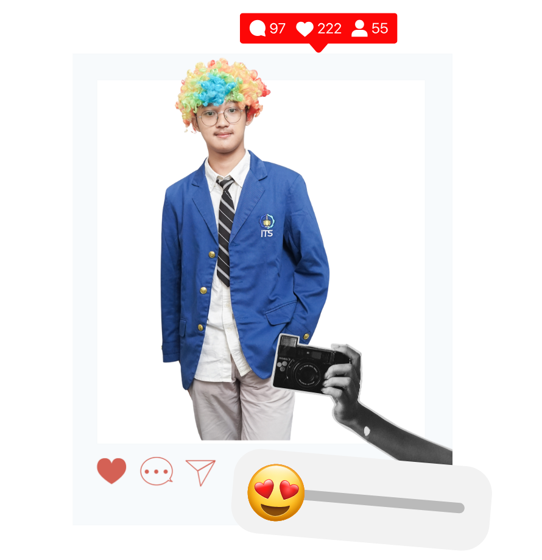

"JANGAN BERHENTI JADI ORANG BAIK"
- Dinamika Dedikasi -
About Me
Mahasiswa Teknik Informatika Institut Teknologi Sepuluh Nopember angkatan 2025 dengan rekam jejak aktif di berbagai organisasi dan kepanitiaan sejak SMA. Memiliki ketertarikan pada pengembangan diri, khususnya dalam kepemimpinan, manajemen tim, serta keterampilan interpersonal. Memegang prinsip untuk menjadikan hari ini sebagai pembelajaran untuk esok hari. Berorientasi pada pertumbuhan berkelanjutan, dengan karakter bertanggung jawab, adaptif, dan ulet sebagai fondasi untuk menghadapi tantangan akademik dan profesional.
Riwayat Pendidikan
- INSTITUT TEKNOLOGI SEPULUH NOPEMBER (Surabaya, Indonesia, 2025 - now)
Departemen Teknik Informatika. IPK Sementara: 3.4
Fokus Bidang Studi: Teknik Informatika
Awardee BSI Scholarship Prestasi Unggulan 2025 (Koordinator Awardee) - SMAN 2 Kota Kediri (Kota Kediri, Jawa Timur, 2022 - 2025)
40% siswa/i dengan nilai raport terbaik (eligible)
Awardee BSI Scholarship Pelajar - MTsN 1 Kediri (Kab. Kediri, Jawa Timur, 2020 - 2022)
Lulus dalam waktu 2 tahun
Tergabung dalam kelas Peserta Didik Cerdas Istimewa (program akselerasi)
Skills
- Kemampuan dalam bidang teknologi: MS Office and Excell, Gdocs dan SPS, OBS Studio
- Kemampuan Bahasa: Bahasa Indonesia (penutur asli), Bahasa Inggris (Aktif/Kecakapan akademis), Bahasa Jawa krama dan ngoko (penutur asli)
- Ketertarikan: Membaca buku fiksi/pengembangan/sosial, Environmental Volunteering, Inisiatif Sosial dan Lingkungan
- Hard Skills: Event Planner, Event Organizer, Project Managemen, MS Office and Excell, OBS Studio, Operator multimedia, analisis dan olah data, crowd control.
Prestasi
- 3rd on ASEAN Robotic Day 2021 (Nasional, Kategori Line Follower)
- Silver Medal on Asian Junior Robot Cup 2022 (Internasional, Kategori IoT Perikanan Gurame Cerdas)
- Juara 5 MACINTOS 2022 (Nasional, Kompetisi Matematika Science)
- 9 Besar Robotik SMA Award (Provinsi, delegasi Kota Kediri)
- Semifinalis BMEC Unair 2023
- 8 besar Technocorner UGM 2024 (Nasional, Robotik Soccer)
Pengalaman
- DN 65 Teenage Dream 2024 (Divisi FOH)
Dies Natalis SMAN 2 Kota Kediri yang menghadirkan Vinoqi, Bernadya, dan Tulus dengan total penonton mencapai lebih dari 5 ribu penonton (meningkat signifikan dari tahun sebelumnya). Terdiri dari 2 hari kegiatan utama (khusus intern dengan perform unit dan siswa-siswi SMAN 2 Kota Kediri, dan extern malam puncak).- Bertugas sebagai panitia di FOH bersama perwakilan divisi acara.
- Bertanggung jawab atas keperluan multimedia acara intern dan extern.
- Kontrol waktu dan materi untuk pengisi acara melalui TV Matador.
- Koordinator bumper dan fireworks show.
- Koordinator panitia dengan vendor multimedia.
- OSIS SMAN 2 Kota Kediri
Ketua Umum masa bakti 2023/2024
- Pemrakarsa forum pembekalan, persiapan sidang, dan diskusi terbuka bersama lebih dari 35 unit dan ekstrakurikuler yang dinaungi oleh 7 Badan Pengurus Harian OSIS SMAN 2 Kota Kediri 2023/2024.
- Terjun langsung dalam perancangan serta pelaksanaan dan bertanggung jawab atas berbagai macam program kerja Unit Acara dan Ekstrakurikuler di SMAN 2 Kota Kediri. - Schematics NLC 2025
Staff Event Divisi National Logic Competition
Kompetisi yang diadakan oleh mahasiswa Departemen Teknik Informatika ITS.